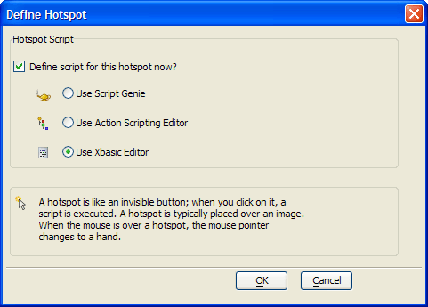

Creating and Programming Hotspots with Xbasic
Many of the forms in the AlphaSports application have a set of images in the lower right corner. At first, you might think these were buttons with image labels. In fact, they are actually composed of two layered images and a set of Hotspots. A hotspot is similar to a button without a visible component. It is a rectangular region that responds to an OnPush event and will run either an Action Script or Xbasic code.
Procedure: Creating and Programming a Hotspot with Xbasic
The following procedure assumes that the developer has opened the form in the Form Editor . Follow these instructions to format a hotspot similar to hotspot4 .
Sketch the hotspot on the form.
When the Define Hotspot dialog box appears, click the Use Xbasic Editor option button.
Click OK.
Paste the following Xbasic code into the Code Editor.
Click Close(X) .
Click Save All and OK.

|
dim op as P
op = obj("help") if (is_object(op)) then op.activate() else form.view("help") end if |
An Explanation of the Xbasic Code
The first statement creates a pointer variable named op to refer to the Help form.
|
dim op as P |
The next statement uses the obj() function to get a pointer to the Help form, if it exists.
|
op = obj("help") |
If the pointer to the Help form exists, the Help form is open, and the is_object() function returns true. If it does not exist, the function returns false. The true alternative uses the activate() function to display the already open Help form.
|
if (is_object(op)) op.activate() |
The false alternative uses the form.view() method to open and display the Help form.
|
else form.view("help") end if |
See Also
Creating and Programming a Hotspot with Action Scripting, The InvoiceReportMenu Form, Using Xbasic to Create Queries